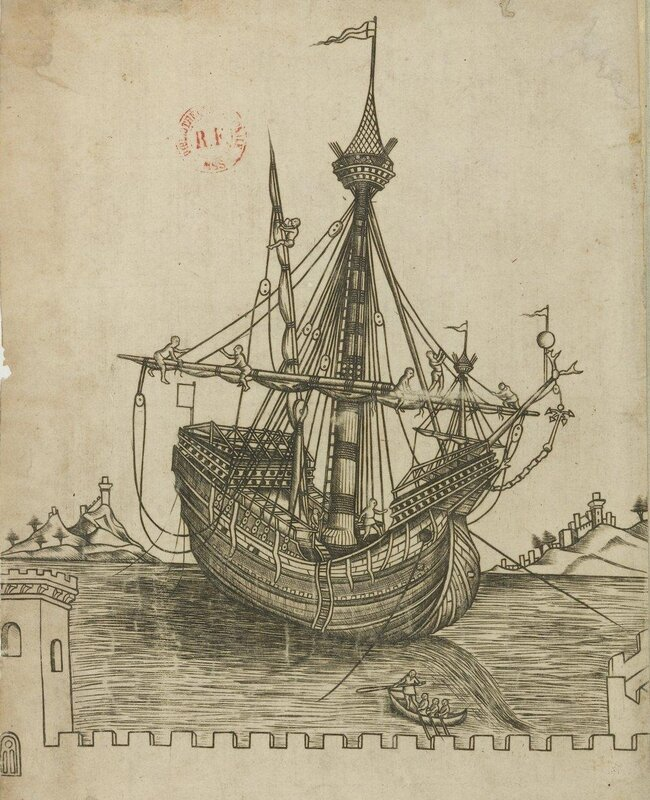
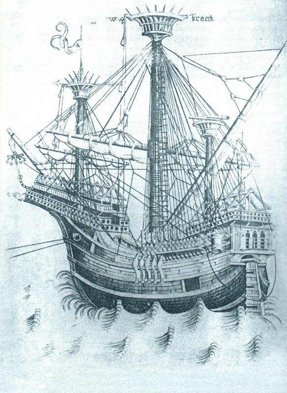
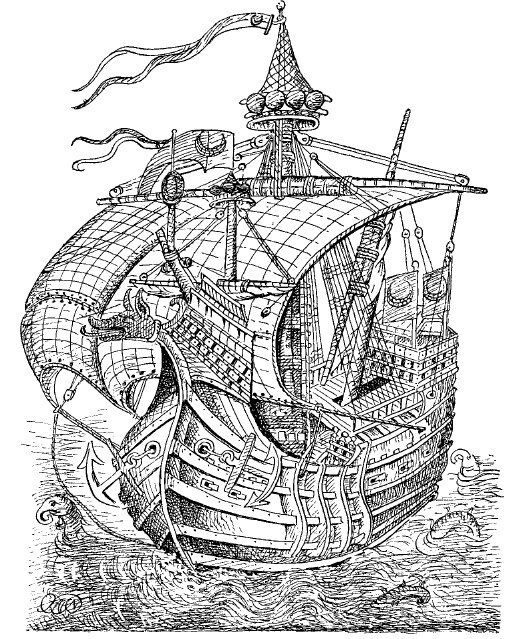

У френда
 a_sonen появился вопрос, почему сети использовали только на одной мачте.
a_sonen появился вопрос, почему сети использовали только на одной мачте.Посмотрим несколько изображений парусных кораблей, на которых используются защитные сети:

Средиземноморская каракка
Мы видим, что здесь сети находятся не только над топом грот-мачты, но и над фок-мачтой. То, что они маленькие - так это типичное для той поры нарушение масштаба: и сама мачта непропорционально мала.

Фламандская каракка
Здесь видна сеть на фок-мачте, но вроде бы нет ее на грот-мачте. Но на грот-мачте вообще не показана грот-стеньга: она не поместилась на гравюре, мастер экономил на меди.

Турецкая каракка
Здесь мы видим также наличие оборонительных сеток на фок- и грот-мачтах.
Помимо сеток на марсах, защитные сетки перед боем натягивали также над носовой и кормовой платформами, где для этой цели постоянно находились двускатные стропила.